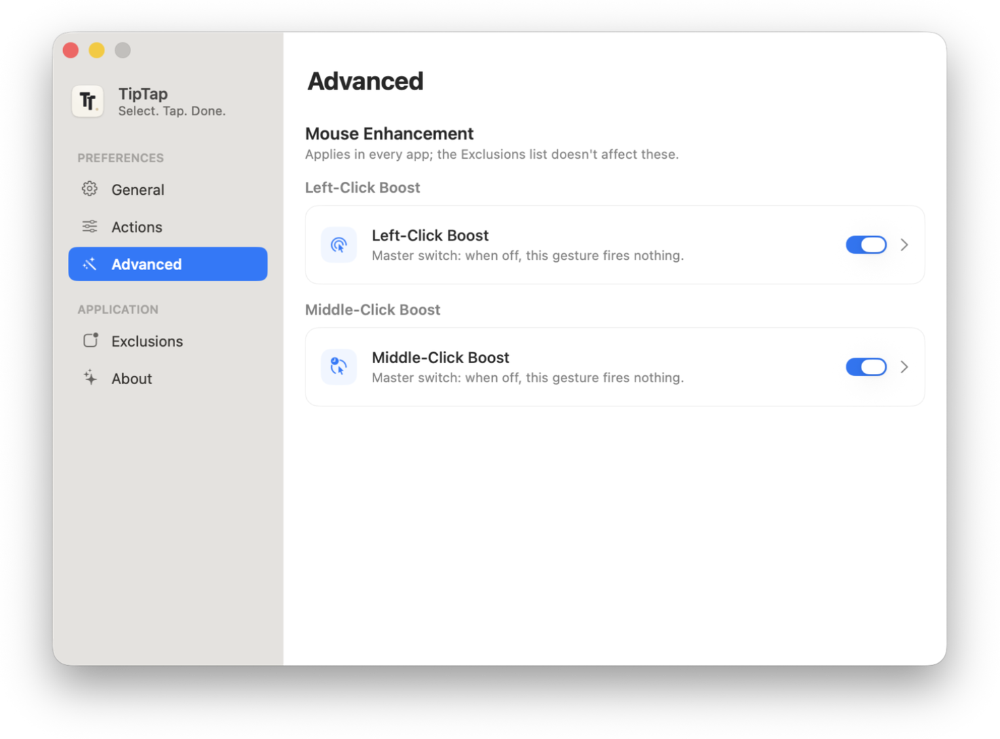
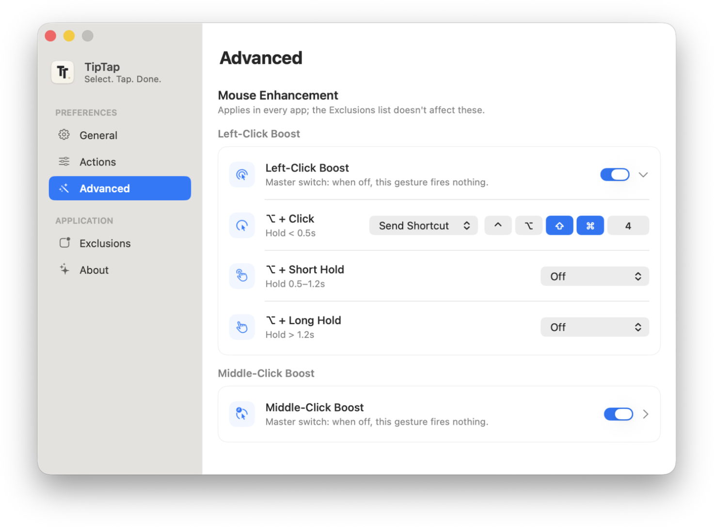
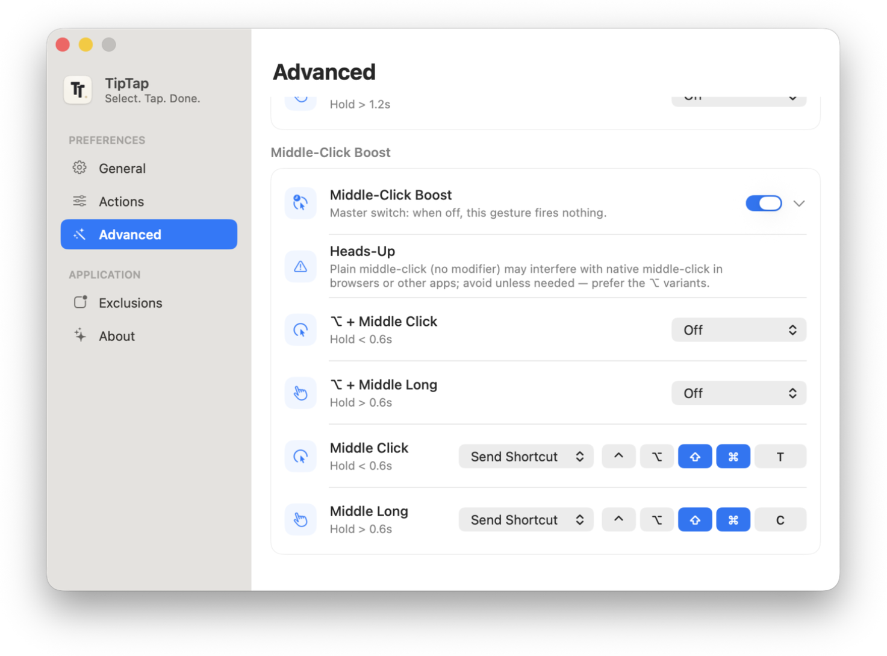

Instant Actions
即时操作
Select text, popup appears. No shortcut to memorize, no menu to dig through.
选中文字，弹窗即现。无需记快捷键，无需翻菜单。
A personal software space featuring lightweight macOS tools for coding, writing, and productivity.
一个个人软件空间，专注打造用于编程、写作与效率提升的轻量 macOS 工具。
macOS App
macOS 应用

Select. Tap. Done.
选中即用
Select any text on your Mac and a popup appears instantly — copy, search, translate, open links, look up in the dictionary, and more. Smart enough to show only what makes sense: Cut hides in read-only text, Translate hides on URLs and paths.
在 Mac 上选中任意文字，弹窗立刻出现——复制、搜索、翻译、打开链接、系统字典查词，一触即发。足够聪明：只读内容不显示剪切，URL 和路径不显示翻译。
⬇ Download for Mac — Free ⬇ 免费下载 Mac 版
Screenshots
应用截图
Customize every action, appearance, and excluded app from a clean native settings panel.
在简洁的原生设置面板中，自定义每个操作、外观与排除列表。





Features
功能
Built for real daily use. Every action is context-aware — it shows only when it actually makes sense.
为真实日常使用设计。每个动作都感知上下文——只在真正合适的时候出现。
Select text, popup appears. No shortcut to memorize, no menu to dig through.
选中文字，弹窗即现。无需记快捷键，无需翻菜单。
Cut hides in read-only text. Translate and Dictionary hide on URLs and file paths. Only relevant actions shown.
只读内容不显示剪切；URL 和路径不显示翻译和查词。只呈现真正有意义的动作。
⌥ + click or scroll-wheel click to fire custom actions — shortcuts, apps, or Shortcut workflows.
⌥+点击或滚轮键触发自定义动作——快捷键、打开 App、运行快捷指令。
Built with SwiftPM. Lives in your menu bar. Classic macOS inline Look Up popover.
SwiftPM 构建，常驻菜单栏，经典 macOS 内联查词浮窗。
No data leaves your Mac. No accounts, no telemetry, no cloud. Sensitive apps excluded by default.
数据不离开设备。无账号、无遥测、无云端。敏感 App 默认排除。
Toggle each action, set popup style, layout, theme, search engine, per-app exclusions, and global shortcut.
按需开关每个动作，设置弹窗样式、布局、主题、搜索引擎、排除列表与全局快捷键。
Philosophy
产品理念
One gesture. Works out of the box. No configuration needed to start.
一个手势，开箱即用，无需任何配置。
If it adds latency, it doesn't ship. Speed is not a feature — it's the baseline.
有延迟，就不发布。速度不是功能，而是底线。
Disappears the moment you don't need it. Never breaks your focus.
不需要时立刻消失，绝不打断你的专注。
Designed for actual daily use — not a feature list, not a demo video.
为日常真实场景设计，而非功能清单或演示视频。
Changelog
更新日志